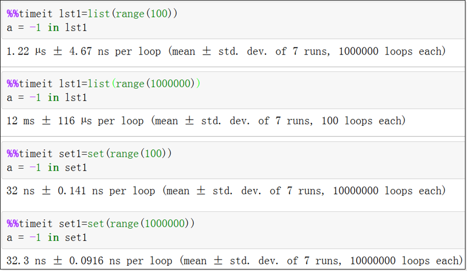
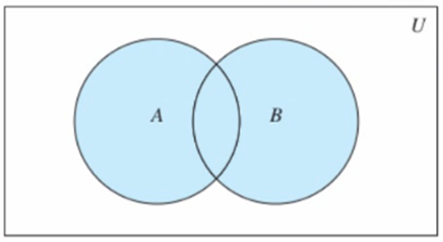
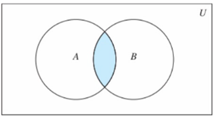
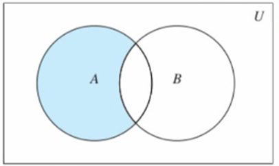
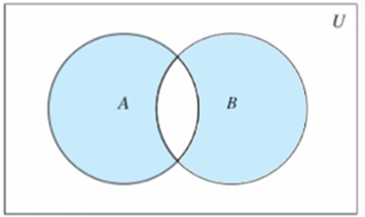

哈希表
1. 集合Set
集合，简称集。由任意个元素构成的集体。高级语言都实现了这个非常重要的数据结构类型。
Python中，它是可变的、无序的、不重复的元素的集合。
1.1 初始化
- set() -> new empty set object
- set(iterable) -> new set object
1 | s1 = set() |
1.2 元素性质
- 去重：在集合中，所有元素必须相异
- 无序：因为无序，所以不可索引
- 可哈希：Python集合中的元素必须可以hash，即元素都可以使用内建函数hash
- 目前学过不可hash的类型有：list、set、bytearray
- 可迭代：set中虽然元素不一样，但元素都可以迭代出来
1.3 增加
- add(elem)
- 增加一个元素到set中
- 如果元素存在，什么都不做
- update(*others)
- 合并其他元素到set集合中来
- 参数others必须是可迭代对象
- 就地修改
1 | s = set() |
1.4 删除
- remove(elem)
- 从set中移除一个元素
- 元素不存在，抛出KeyError异常。为什么是KeyError？
- discard(elem)
- 从set中移除一个元素
- 元素不存在，什么都不做
- pop() -> item
- 移除并返回任意的元素。为什么是任意元素？
- 空集返回KeyError异常
- clear()
- 移除所有元素
1 | s = set(range(10)) |
1.5 修改
集合类型没有修改。因为元素唯一。如果元素能够加入到集合中，说明它和别的元素不一样。
所谓修改，其实就是把当前元素改成一个完全不同的元素，就是删除加入新元素
1.6 索引
非线性结构，不可索引。
1.7 成员运算符in
1 | print(10 in [1, 2, 3]) |
上面2句代码，分别在列表和集合中搜索元素。如果列表和集合的元素都有100万个，谁的效率高？
1.8 set和线性结构比较

结果说明，集合性能很好。为什么？
- 线性数据结构，搜索元素的时间复杂度是O(n)，即随着数据规模增加耗时增大
- set、dict使用hash表实现，内部使用hash值作为key，时间复杂度为O(1)，查询时间和数据规模无关，不会随着数据规模增大而搜索性能下降。
1.9 遍历
只要是容器，都可以遍历元素。但是效率都是O(n)
1.10 可哈希
- 数值型int、float、complex
- 布尔型True、False
- 字符串string、bytes
- tuple
- None
- 以上都是不可变类型，称为可哈希类型，hashable
set元素必须是可hash的。
1.11 集合概念
- 全集
- 所有元素的集合。例如实数集，所有实数组成的集合就是全集
- 子集subset和超集superset
- 一个集合A所有元素都在另一个集合B内，A是B的子集，B是A的超集
- 真子集和真超集
- A是B的子集，且A不等于B，A就是B的真子集，B是A的真超集
- 并集：多个集合合并的结果
- 交集：多个集合的公共部分
- 差集：集合中除去和其他集合公共部分
1.11.1 并集

将两个集合A和B的所有的元素合并到一起，组成的集合称作集合A与集合B的并集
- union(*others) 返回和多个集合合并后的新的集合
- | 运算符重载，等同union
- update(*others) 和多个集合合并，就地修改
- |= 等同update
1.11.2 交集

集合A和B，由所有属于A且属于B的元素组成的集合
- intersection(*others) 返回和多个集合的交集
- & 等同intersection
- intersection_update(*others) 获取和多个集合的交集，并就地修改
- &= 等同intersection_update
1.11.3 差集

集合A和B，由所有属于A且不属于B的元素组成的集合
- difference(*others) 返回和多个集合的差集
-
- 等同difference
- difference_update(*others) 获取和多个集合的差集并就地修改
- -= 等同difference_update
1.11.4 对称差集

集合A和B，由所有不属于A和B的交集元素组成的集合，记作（A-B）∪（B-A）
- symmetric_differece(other) 返回和另一个集合的对称差集
- ^ 等同symmetric_differece
- symmetric_differece_update(other) 获取和另一个集合的对称差集并就地修改
- ^= 等同symmetric_differece_update
1.11.5 其它集合运算
- issubset(other)、<= 判断当前集合是否是另一个集合的子集
- set1 < set2 判断set1是否是set2的真子集
- issuperset(other)、>= 判断当前集合是否是other的超集
- set1 > set2 判断set1是否是set2的真超集
- isdisjoint(other) 当前集合和另一个集合没有交集，没有交集，返回True
1.11.6 练习：
一个总任务列表，存储所有任务。一个已完成的任务列表。找出为未完成的任务
1 | 业务中，任务ID一般不可以重复 |
集合运算，用好了妙用无穷。
2. 字典Dict
Dict即Dictionary，也称为mapping。
Python中，字典由任意个元素构成的集合，每一个元素称为Item，也称为Entry。这个Item是由(key,value)组成的二元组。
字典是可变的、无序的、key不重复的key-value pairs键值对集合。
2.1 初始化
- dict(**kwargs) 使用name=value对初始化一个字典
- dict(iterable, kwarg) 使用可迭代对象和name=value对构造字典，不过可迭代对象的元素必须是一个二元结构
- dict(mapping, **kwarg) 使用一个字典构建另一个字典
字典的初始化方法都非常常用，都需要会用
1 | d1 = {} |
2.2 元素访问
- d[key]
- 返回key对应的值value
- key不存在抛出KeyError异常
- get(key[, default])
- 返回key对应的值value
- key不存在返回缺省值，如果没有设置缺省值就返回None
- setdefault(key[, default])
- 返回key对应的值value
- key不存在，添加kv对，value设置为default，并返回default，如果default没有设置，缺省为None
2.3 新增和修改
- d[key] = value
- 将key对应的值修改为value
- key不存在添加新的kv对
- update([other]) -> None
- 使用另一个字典的kv对更新本字典
- key不存在，就添加
- key存在，覆盖已经存在的key对应的值就地修改
1 | d = {} |
2.4 删除
- pop(key[, default])
- key存在，移除它，并返回它的value
- key不存在，返回给定的default
- default未设置，key不存在则抛出KeyError异常
- popitem()
- 移除并返回一个任意的键值对
- 字典为empty，抛出KeyError异常
- clear()
- 清空字典
2.5 遍历
1、遍历Key
1 | for k in d: |
2、遍历Value
1 | for v in d.values(): |
3、遍历Item
1 | for item in d.items(): |
Python3中，keys、values、items方法返回一个类似一个生成器的可迭代对象
- Dictionary view对象，可以使用len()、iter()、in操作
- 字典的entry的动态的视图，字典变化，视图将反映出这些变化
- keys()返回一个类set对象，也就是可以看做一个set集合。如果values()都可以hash，那么items()也可以看做是类set对象
Python2中，上面的方法会返回一个新的列表，立即占据新的内存空间。所以Python2建议使用iterkeys、itervalues、iteritems版本，返回一个迭代器，而不是返回一个copy
2.6 遍历与删除
1 | # 错误的做法 |
在使用keys、values、items方法遍历的时候，不可以改变字典的size
1 | while len(d): |
上面的while循环虽然可以移除字典元素，但是很少使用，不如直接clear。
1 | # for 循环正确删除 |
集合set在遍历中，也不能改变其长度。
2.7 key
字典的key和set的元素要求一致
- set的元素可以就是看做key，set可以看做dict的简化版
- hashable 可哈希才可以作为key，可以使用hash()测试
- 使用key访问，就如同列表使用index访问一样，时间复杂度都是O(1)，这也是最好的访问元素的方式
1 | d = { |
2.8 有序性
字典元素是按照key的hash值无序存储的。
但是，有时候我们却需要一个有序的元素顺序，Python 3.6之前，使用OrderedDict类可以做到，3.6开始dict自身支持。到底Python对一个无序数据结构记录了什么顺序？
1 | # 3.5如下 |
Python 3.6之前，在不同的机器上，甚至同一个程序分别运行2次，都不能确定不同的key的先后顺序
1 | # 3.6+表现如下 |
Python 3.6+，记录了字典key的录入顺序，遍历的时候，就是按照这个顺序。
如果使用 d = {‘a’:300, ‘b’:200, ‘c’:100, ‘d’:50} ，就会造成以为字典按照key排序的错觉。
目前，建议不要3.6+提供的这种字典特性，还是认为字典返回的是无序的，可以在Python不同版本中考虑使用OrderedDict类来保证这种录入序